Markov Decision Processes and Dynamic Programming
MDPs are the basic RL framework
1 - Markov Decision Process
Markov Decision Process (MDP)
- The kind of problem that is addressed by RL is called a Markov Decision Process (MDP).

The environment is fully observable, i.e. the current state \(s_t\) completely characterizes the process at time \(t\) (Markov property).
Actions \(a_t\) provoke transitions between the two states \(s_t\) and \(s_{t+1}\).
State transitions \((s_t, a_t, s_{t+1})\) are governed by transition probabilities \(p(s_{t+1} | s_t, a_t)\).
A reward \(r_{t+1}\) is (probabilistically) associated to each transition .
n-armed bandits are MDPs with only one state.
MDPs are extensions of the Markov Chain (MC).
Markov Chain (MC)
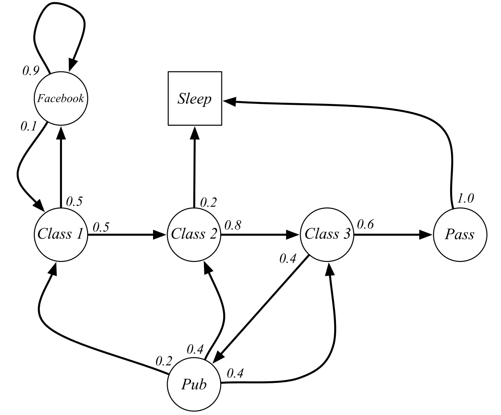
A first-order Markov chain (or Markov process) is a stochastic process generated by a sequence of transitions between states governed by state transition probabilities.
A Markov chain is defined by:
The state set \(\mathcal{S} = \{ s_i\}_{i=1}^N\).
The state transition probability function:
\[ \begin{aligned} \mathcal{P}: \mathcal{S} \rightarrow & P(\mathcal{S}) \\ p(s' | s) & = P (s_{t+1} = s' | s_t = s) \\ \end{aligned} \]
Markov chains can be used to sample complex distributions (Markov Chain Monte Carlo) and have applications in many fields such as biology, chemistry, financem etc.
Markov Decision Process (MDP)
A Markov Decision Process is a MC where transitions are conditioned by actions \(a \in \mathcal{A}\) and associated with a scalar reward \(r\).
A finite MDP is defined by the tuple \(<\mathcal{S}, \mathcal{A}, \mathcal{P}, \mathcal{R}, \gamma>\):
The finite state set \(\mathcal{S} = \{ s_i\}_{i=1}^N\) with the Markov property.
The finite action set \(\mathcal{A} = \{ a_i\}_{i=1}^M\).
The state transition probability function:
\[ \begin{aligned} \mathcal{P}: \mathcal{S} \times \mathcal{A} \rightarrow & P(\mathcal{S}) \\ p(s' | s, a) & = P (s_{t+1} = s' | s_t = s, a_t = a) \\ \end{aligned} \]
- The expected reward function:
\[ \begin{aligned} \mathcal{R}: \mathcal{S} \times \mathcal{A} \times \mathcal{S} \rightarrow & \Re \\ r(s, a, s') &= \mathbb{E} (r_{t+1} | s_t = s, a_t = a, s_{t+1} = s') \\ \end{aligned} \]
- The discount factor \(\gamma \in [0, 1]\).
Markov Decision Process (MDP)
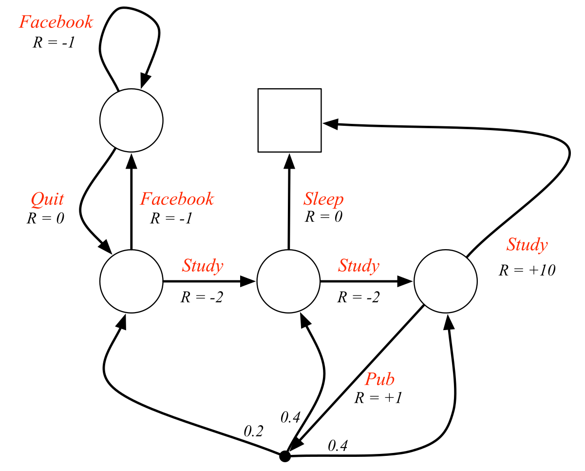
Markov property
- The Markov property states that:
The future is independent of the past given the present.
- Formally, the state \(s_t\) (state at time \(t\)) is Markov (or Markovian) if and only if:
\[\begin{aligned} P( s_{t+1} = s', r_{t+1} = r & | s_t, a_t, r_t, s_{t-1}, a_{t-1}, ..., s_0, a_0) = P( s_{t+1} = s', r_{t+1} = r | s_t, a_t ) \\ &\text{for all s', r, and past histories} \quad (s_{t}, a_{t}, ..., s_0, a_0) \end{aligned} \]
The knowledge of the current state \(s_t\) (and the executed action \(a_t\)) is enough to predict in which state \(s_{t+1}\) the system will be at the next time step.
We do not need the whole history \(\{s_0, a_0, s_1, a_1, \ldots, s_t\}\) of the system to predict what will happen.
Note: if we need \(s_{t-1}\) and \(s_t\) to predict \(s_{t+1}\), we have a second-order MDP.
Markov property
For example, the probability 0.8 of transitioning from “Class 2” to “Class 3” is the same regardless we were in “Class 1” or “Pub” before.
If this is not the case, the states are not Markov, and this is not a Markov chain / decision process.
We would need to create two distinct states:
“Class 2 coming from Class 1”
“Class 2 coming from the pub”
Markov property

Where is the ball going? To the little girl or to the player?
Single video frames are not Markov states: you cannot generally predict what will happen based on a single image.
A simple solution is to stack or concatenate multiple frames:
- By measuring the displacement of the ball between two consecutive frames, we can predict where it is going.
- One can also learn state representations containing the history using recurrent neural networks (see later).
POMDP : Partially-Observable Markov Decision Process
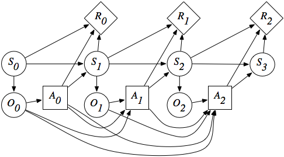
In a POMDP, the agent does not have access to the true state \(s_t\) of the environment, but only observations \(o_t\).
Observations are partial views of the state, without the Markov property.
The dynamics of the environment (transition probabilities, reward expectations) only depend on the state, not the observations.
The agent can only make decisions (actions) based on the sequence of observations, as it does not have access to the state directly (Plato’s cavern).
- In a POMDP, the state \(s_t\) of the agent can be considered the concatenation of the past observations and actions:
\[ s_t = (o_0, a_0, o_1, a_1, \ldots, a_{t-1}, o_t) \]
- Under conditions, this inferred state can have the Markov property and the POMDP is solvable.
State transition matrix
- Supposing that the states have the Markov property, the transitions in the system can be summarized by the state transition matrix \(\mathcal{P}\):
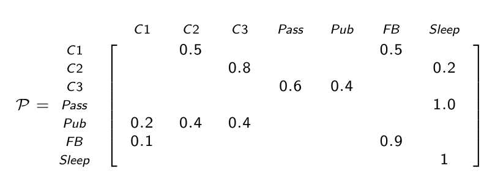
- Each element of the state transition matrix corresponds to \(p(s' | s)\). Each row of the state transition matrix sums to 1:
\[\sum_{s'} p(s' | s) = 1\]
Expected reward
- As with n-armed bandits, we only care about the expected reward received during a transition \(s \rightarrow s'\) (on average), but the actual reward received \(r_{t+1}\) may vary around the expected value.
\[r(s, a, s') = \mathbb{E} (r_{t+1} | s_t = s, a_t = a, s_{t+1} = s')\]

Sparse vs. dense rewards
An important distinction in practice is sparse vs. dense rewards.
Sparse rewards take non-zero values only during certain transitions: game won/lost, goal achieved, timeout, etc.
Dense rewards provide non-zero values during each transition: distance to goal, energy consumption, speed of the robot, etc.
MDPs with sparse rewards are much harder to learn.
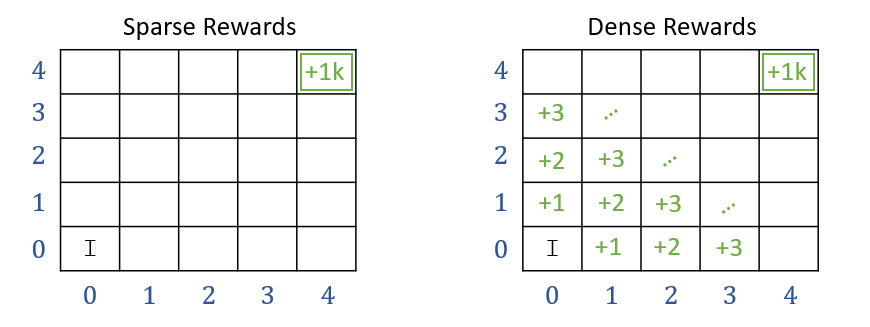
Transition and reward probabilities
- Why do we need transition probabilities in RL?
\[ p(s' | s, a) = P (s_{t+1} = s' | s_t = s, a_t = a)\]
Some RL tasks are deterministic: an action \(a\) in a state \(s\) always leads to the state \(s'\):
- Board games, video games…
Others are stochastic: the same action \(a\) can lead to different states \(s'\):
Casino games (throwing a dice, etc)
Two-opponent games (the next state depends on what the other player chooses).
Uncertainty (shoot at basketball, slippery wheels, robotic grasping).
For a transition \((s, a, s')\), the received reward can be also stochastic:
- Casino games (armed bandit), incomplete information, etc.
\[ r(s, a, s') = \mathbb{E} (r_{t+1} | s_t = s, a_t = a, s_{t+1} = s')\]
- Most of the problems we will see in this course have deterministic rewards, but we only care about expectations anyway.
Return
- Over time, the MDP will be in a sequence of states (possibly infinite):
\[s_0 \rightarrow s_1 \rightarrow s_2 \rightarrow \ldots \rightarrow s_T\]
and collect a sequence of rewards:
\[r_1 \rightarrow r_2 \rightarrow r_3 \rightarrow \ldots \rightarrow r_{T}\]


- In a MDP, we are interested in maximizing the return \(R_t\), i.e. the discounted sum of future rewards after the step \(t\):
\[ R_t = r_{t+1} + \gamma \, r_{t+2} + \gamma^2 \, r_{t+3} + \ldots = \sum_{k=0}^\infty \gamma^k \, r_{t+k+1} \]
- Reward-to-go: how much reward will I collect from now on?
Return
- Of course, you can never know the return at time \(t\): transitions and rewards are probabilistic, so the received rewards in the future are not exactly predictable at \(t\).
\[ R_t = r_{t+1} + \gamma \, r_{t+2} + \gamma^2 \, r_{t+3} + ... = \sum_{k=0}^{\infty} \gamma^k \, r_{t+k+1} \]
- \(R_t\) is therefore purely theoretical: RL is all about estimating the return.
- More generally, for a trajectory (episode) \(\tau = (s_0, a_0, r_1, s_1, a_1, \ldots, s_T)\), one can define its return as:
\[ R(\tau) = \sum_{t=0}^{T} \gamma^t \, r_{t+1} \]
Discount factor
- Future rewards are discounted:
\[ R_t = r_{t+1} + \gamma \, r_{t+2} + \gamma^2 \, r_{t+3} + \ldots = \sum_{k=0}^\infty \gamma^k \, r_{t+k+1} \]
The discount factor (or discount rate, or discount) \(\gamma \in [0, 1]\) is a very important parameter in RL:
It defines the present value of future rewards.
Receiving 10 euros now has a higher value than receiving 10 euros in ten years, although the reward is the same: you do not have to wait.
The value of receiving a reward \(r\) after \(k+1\) time steps is \(\gamma^k \, r\).
\(\gamma\) determines the relative importance of future rewards for the behavior:
if \(\gamma\) is close to 0, only the immediately available rewards will count: the agent is greedy or myopic.
if \(\gamma\) is close to 1, even far-distance rewards will be taken into account: the agent is farsighted.

Discount factor
- When \(\gamma < 1\), \(\gamma^k\) tends to 0 when \(k\) goes to infinity: this makes sure that the return is always finite.
\[ R_t = r_{t+1} + \gamma \, r_{t+2} + \gamma^2 \, r_{t+3} + \ldots = \sum_{k=0}^\infty \gamma^k \, r_{t+k+1} \]
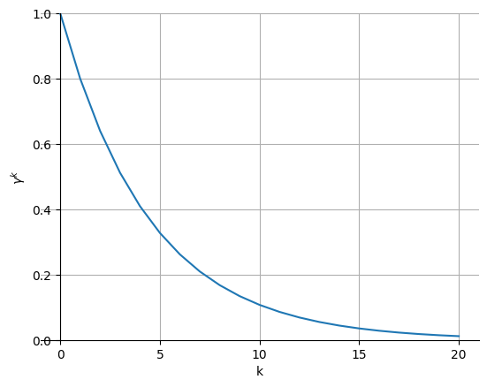
Episodic vs. continuing tasks
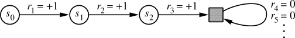
- For episodic tasks (which break naturally into finite episodes of length \(T\), e.g. plays of a game, trips through a maze), the return is always finite and easy to compute at the end of the episode. The discount factor can be set to 1.
\[ R_t = \sum_{k=0}^{T} r_{t+k+1} \]
- For continuing tasks (which can not be split into episodes), the return could become infinite if \(\gamma = 1\). The discount factor has to be smaller than 1.
\[ R_t = \sum_{k=0}^{\infty} \gamma^k \, r_{t+k+1} \]
Why the reward on the long term?
Selecting the action \(a_1\) in \(s_1\) does not bring reward immediately (\(r_1 = 0\)) but allows to reach \(s_5\) in the future and get a reward of 10.
Selecting \(a_2\) in \(s_1\) brings immediately a reward of 1, but that will be all.
\(a_1\) is better than \(a_2\), because it will bring more reward on the long term.
Why the reward on the long term?
- When selecting \(a_1\) in \(s_1\), the discounted return is:
\[ R = 0 + \gamma \, 0 + \gamma^2 \, 0 + \gamma^3 \, 10 + \ldots = 10 \, \gamma^3 \]
while it is \(R= 1\) for the action \(a_2\).
For small values of \(\gamma\) (e.g. 0.1), \(10\, \gamma^3\) becomes smaller than one, so the action \(a_2\) leads to a higher discounted return.
The discount rate \(\gamma\) changes the behavior of the agent. It is usually taken somewhere between 0.9 and 0.999.
Example: the cartpole balancing task

State: Position and velocity of the cart, angle and speed of the pole.
Actions: Commands to the motors for going left or right.
Reward function: Depends on whether we consider the task as episodic or continuing.
Episodic task where episode ends upon failure:
reward = +1 for every step before failure, 0 at failure.
return = number of steps before failure.
Continuing task with discounted return:
reward = -1 at failure, 0 otherwise.
return = \(- \gamma^k\) for \(k\) steps before failure.
- In both cases, the goal is to maximize the return by maintaining the pole vertical as long as possible.
The policy

- The probability that an agent selects a particular action \(a\) in a given state \(s\) is called the policy \(\pi\).
\[ \begin{align} \pi &: \mathcal{S} \times \mathcal{A} \rightarrow P(\mathcal{S})\\ (s, a) &\rightarrow \pi(s, a) = P(a_t = a | s_t = s) \\ \end{align} \]
The goal of an agent is to find a policy that maximizes the sum of received rewards on the long term, i.e. the return \(R_t\) at each each time step.
This policy is called the optimal policy \(\pi^*\).
\[ \pi^* = \text{argmax} \, \mathcal{J}(\pi) = \text{argmax} \, \mathbb{E}_{\tau \sim \rho_\pi} [R(\tau)] \]
Goal of Reinforcement Learning
RL is an adaptive optimal control method for Markov Decision Processes using (sparse) rewards as a partial feedback.
At each time step \(t\), the agent observes its Markov state \(s_t \in \mathcal{S}\), produces an action \(a_t \in \mathcal{A}(s_t)\), receives a reward according to this action \(r_{t+1} \in \Re\) and updates its state: \(s_{t+1} \in \mathcal{S}\).
The agent generates trajectories \(\tau = (s_0, a_0, r_1, s_1, a_1, \ldots, s_T)\) depending on its policy \(\pi(s ,a)\).
The return of a trajectory is the (discounted) sum of rewards accumulated during the sequence: \[ R(\tau) = \sum_{t=0}^{T} \gamma^t \, r_{t+1} \]
The goal is to find the optimal policy \(\pi^* (s, a)\) that maximizes in expectation the return of each possible trajectory under that policy:
\[ \pi^* = \text{argmax} \, \mathcal{J}(\pi) = \text{argmax} \, \mathbb{E}_{\tau \sim \rho_\pi} [R(\tau)] \]
2 - Bellman equations
Value Functions
A central notion in RL is to estimate the value (or utility) of every state and action of the MDP.
The value of a state \(V^{\pi} (s)\) is the expected return when starting from that state and thereafter following the agent’s current policy \(\pi\).
The state-value function \(V^{\pi} (s)\) of a state \(s\) given the policy \(\pi\) is defined as the mathematical expectation of the return after that state:
\[ V^{\pi} (s) = \mathbb{E}_{\rho_\pi} ( R_t | s_t = s) = \mathbb{E}_{\rho_\pi} ( \sum_{k=0}^{\infty} \gamma^k r_{t+k+1} |s_t=s ) \]
Value Functions
\[ V^{\pi} (s) = \mathbb{E}_{\rho_\pi} ( R_t | s_t = s) = \mathbb{E}_{\rho_\pi} ( \sum_{k=0}^{\infty} \gamma^k r_{t+k+1} |s_t=s ) \]
The mathematical expectation operator \(\mathbb{E}(\cdot)\) is indexed by \(\rho_\pi\), the probability distribution of states achievable with \(\pi\).
Several trajectories are possible after the state \(s\):
The state transition probability function \(p(s' | s, a)\) leads to different states \(s'\), even if the same actions are taken.
The expected reward function \(r(s, a, s')\) provides stochastic rewards, even if the transition \((s, a, s')\) is the same.
The policy \(\pi\) itself is stochastic.
Only rewards that are obtained using the policy \(\pi\) should be taken into account, not the complete distribution of states and rewards.
Value Functions
- The value of a state is not intrinsic to the state itself, it depends on the policy:
\[V^{\pi} (s) = \mathbb{E}_{\rho_\pi} ( R_t | s_t = s) = \mathbb{E}_{\rho_\pi} ( \sum_{k=0}^{\infty} \gamma^k r_{t+k+1} |s_t=s )\]
- One could be in a state which is very close to the goal (only one action left to win game), but if the policy is very bad, the “good” action will not be chosen and the state will have a small value.
Value Functions
The value of taking an action \(a\) in a state \(s\) under policy \(\pi\) is the expected return starting from that state, taking that action, and thereafter following the following \(\pi\).
The action-value function for a state-action pair \((s, a)\) under the policy \(\pi\) (or Q-value) is defined as:
\[\begin{align} Q^{\pi} (s, a) & = \mathbb{E}_{\rho_\pi} ( R_t | s_t = s, a_t =a) \\ & = \mathbb{E}_{\rho_\pi} ( \sum_{k=0}^{\infty} \gamma^k r_{t+k+1} |s_t=s, a_t=a) \\ \end{align}\]
- The Q-value of an action is sometimes called its utility: is it worth taking this action?
Side note: Different notations in RL
Notations can vary depending on the source.
The ones used in this course use what you can read in most modern deep RL papers (Deepmind, OpenAI), but beware that you can encounter \(G_t\) for the return…
| This course | Sutton and Barto 1998 | Sutton and Barto 2017 | |
|---|---|---|---|
| Current state | \(s_t\) | \(s_t\) | \(S_t\) |
| Selected action | \(a_t\) | \(a_t\) | \(A_t\) |
| Sampled reward | \(r_{t+1}\) | \(r_{t+1}\) | \(R_{t+1}\) |
| Transition probability | \(p(s' | s,a)\) | \(\mathcal{P}_{ss'}^a\) | \(p(s'|s, a)\) |
| Expected reward | \(r(s,a, s')\) | \(\mathcal{R}_{ss'}^a\) | \(r(s, a, s')\) |
| Return | \(R_t\) | \(R_t\) | \(G_t\) |
| State value function | \(V^\pi(s)\) | \(V^\pi(s)\) | \(v_\pi(s)\) |
| Action value function | \(Q^\pi(s, a)\) | \(Q^\pi(s, a)\) | \(q_\pi(s, a)\) |
The V and Q value functions are inter-dependent
- The value of a state \(V^{\pi}(s)\) depends on the value \(Q^{\pi} (s, a)\) of the action that will be chosen by the policy \(\pi\) in \(s\):
\[ V^{\pi}(s) = \mathbb{E}_{a \sim \pi(s,a)} [Q^{\pi} (s, a)] = \sum_{a \in \mathcal{A}(s)} \pi(s, a) \, Q^{\pi} (s, a) \]
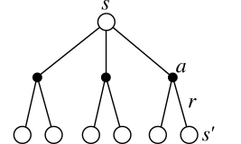
If the policy \(\pi\) is deterministic (the same action is chosen every time), the value of the state is the same as the value of that action (same expected return).
If the policy \(\pi\) is stochastic (actions are chosen with different probabilities), the value of the state is the weighted average of the value of the actions.
If the Q-values are known, the V-values can be found easily.
Values and immediate rewards
- We can note that the return at time \(t\) depends on the immediate reward \(r_{t+1}\) and the return at the next time step \(t+1\):
\[ \begin{aligned} R_t &= r_{t+1} + \gamma \, r_{t+2} + \gamma^2 \, r_{t+3} + \dots + \gamma^k \, r_{t+k+1} + \dots \\ &= r_{t+1} + \gamma \, ( r_{t+2} + \gamma \, r_{t+3} + \dots + \gamma^{k-1} \, r_{t+k+1} + \dots) \\ &= r_{t+1} + \gamma \, R_{t+1} \\ \end{aligned} \]
- When taking the mathematical expectation of that identity, we obtain:
\[ \mathbb{E}_{\rho_\pi}[R_t] = r(s_t, a_t, s_{t+1}) + \gamma \, \mathbb{E}_{\rho_\pi}[R_{t+1}] \]
- It becomes clear that the value of an action depends on the immediate reward received just after the action, as well as the value of the next state:
\[ Q^{\pi}(s_t, a_t) = r(s_t, a_t, s_{t+1}) + \gamma \, V^{\pi} (s_{t+1}) \]
- But that is only for a fixed \((s_t, a_t, s_{t+1})\) transition.
The V and Q value functions are inter-dependent
- Taking transition probabilities into account, one can obtain the Q-values when the V-values are known:
\[ Q^{\pi}(s, a) = \mathbb{E}_{s' \sim p(s'|s, a)} [ r(s, a, s') + \gamma \, V^{\pi} (s') ] = \sum_{s' \in \mathcal{S}} p(s' | s, a) \, [ r(s, a, s') + \gamma \, V^{\pi} (s') ] \]
The value of an action depends on:
the states \(s'\) one can arrive after the action (with a probability \(p(s' | s, a)\)).
the value of that state \(V^{\pi} (s')\), weighted by \(\gamma\) as it is one step in the future.
the reward received immediately after taking that action \(r(s, a, s')\) (as it is not included in the value of \(s'\)).
Bellman equation for \(V^{\pi}\)
- A fundamental property of value functions used throughout reinforcement learning is that they satisfy a particular recursive relationship:
\[ \begin{aligned} V^{\pi}(s) &= \sum_{a \in \mathcal{A}(s)} \pi(s, a) \, Q^{\pi} (s, a)\\ &= \sum_{a \in \mathcal{A}(s)} \pi(s, a) \, \sum_{s' \in \mathcal{S}} p(s' | s, a) \, [ r(s, a, s') + \gamma \, V^{\pi} (s') ] \end{aligned} \]
This equation is called the Bellman equation for \(V^{\pi}\).
It expresses the relationship between the value of a state and the value of its successors, depending on the dynamics of the MDP (\(p(s' | s, a)\) and \(r(s, a, s')\)) and the current policy \(\pi\).
The interesting property of the Bellman equation for RL is that it admits one and only one solution \(V^{\pi}(s)\).
Bellman equation for \(Q^{\pi}\)
- The same recursive relationship stands for \(Q^{\pi}(s, a)\):
\[ \begin{aligned} Q^{\pi}(s, a) &= \sum_{s' \in \mathcal{S}} p(s' | s, a) \, [ r(s, a, s') + \gamma \, V^{\pi} (s') ] \\ &= \sum_{s' \in \mathcal{S}} p(s' | s, a) \, [ r(s, a, s') + \gamma \, \sum_{a' \in \mathcal{A}(s')} \pi(s', a') \, Q^{\pi} (s', a')] \end{aligned} \]
which is called the Bellman equation for \(Q^{\pi}\).
- The following backup diagrams denote these recursive relationships.
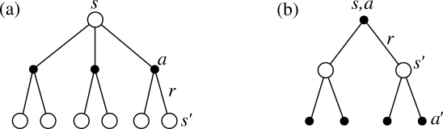
3 - Bellman optimality equations
Optimal policy
The optimal policy is the policy that gathers the maximum of reward on the long term.
Value functions define a partial ordering over policies:
A policy \(\pi\) is better than another policy \(\pi'\) if its expected return is greater or equal than that of \(\pi'\) for all states \(s\).
\[ \pi \geq \pi' \Leftrightarrow V^{\pi}(s) \geq V^{\pi'}(s) \quad \forall s \in \mathcal{S} \]
For a MDP, there exists at least one policy that is better than all the others: this is the optimal policy \(\pi^*\).
We note \(V^*(s)\) and \(Q^*(s, a)\) the optimal value of the different states and actions under \(\pi^*\).
\[ V^* (s) = \max_{\pi} V^{\pi}(s) \quad \forall s \in \mathcal{S} \]
\[ Q^* (s, a) = \max_{\pi} Q^{\pi}(s, a) \quad \forall s \in \mathcal{S}, \quad \forall a \in \mathcal{A} \]
The optimal policy is greedy
When the policy is optimal \(\pi^*\), the link between the V and Q values is even easier.
The V and Q values are maximal for the optimal policy: there is no better alternative.
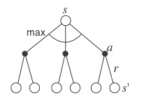
- The optimal action \(a^*\) to perform in the state \(s\) is the one with the highest optimal Q-value \(Q^*(s, a)\).
\[ a^* = \text{argmax}_a \, Q^*(s, a) \]
- By definition, this action will bring the maximal return when starting in \(s\).
\[ Q^*(s, a) = \mathbb{E}_{\rho_{\pi^*}} [R_t] \]
- The optimal policy is greedy with respect to \(Q^*(s, a)\), i.e. deterministic.
\[ \pi^*(s, a) = \begin{cases} 1 \; \text{if} \; a = a^* \\ 0 \; \text{otherwise.} \end{cases} \]
Bellman optimality equations
- As the optimal policy is deterministic, the optimal value of a state is equal to the value of the optimal action:
\[ V^* (s) = \max_{a \in \mathcal{A}(s)} Q^{\pi^*} (s, a) \]
The expected return after being in \(s\) is the same as the expected return after being in \(s\) and choosing the optimal action \(a^*\), as this is the only action that can be taken.
This allows to find the Bellman optimality equation for \(V^*\):
\[ V^* (s) = \max_{a \in \mathcal{A}(s)} \sum_{s' \in \mathcal{S}} p(s' | s, a) \, [ r(s, a, s') + \gamma \, V^{*} (s') ] \]
- The same Bellman optimality equation stands for \(Q^*\):
\[ Q^* (s, a) = \sum_{s' \in \mathcal{S}} p(s' | s, a) \, [r(s, a, s') + \gamma \max_{a' \in \mathcal{A}(s')} Q^* (s', a') ] \]
- The optimal value of \((s, a)\) depends on the optimal action in the next state \(s'\).
4 - Dynamic Programming (DP)
Dynamic Programming (DP)
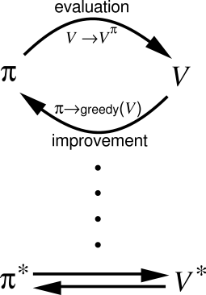
Dynamic Programming (DP) iterates over two steps:
Policy evaluation
- For a given policy \(\pi\), the value of all states \(V^\pi(s)\) or all state-action pairs \(Q^\pi(s, a)\) is calculated based on the Bellman equations:
\[ V^{\pi} (s) = \sum_{a \in \mathcal{A}(s)} \pi(s, a) \, \sum_{s' \in \mathcal{S}} p(s' | s, a) \, [ r(s, a, s') + \gamma \, V^{\pi} (s') ] \]
Policy improvement
- From the current estimated values \(V^\pi(s)\) or \(Q^\pi(s, a)\), a new better policy \(\pi\) is derived.
\[\pi' \leftarrow \text{Greedy}(V^\pi)\]
- After enough iterations, the policy converges to the optimal policy (if the states are Markov).
Policy evaluation
- Bellman equation for the state \(s\) and a fixed policy \(\pi\):
\[ V^{\pi} (s) = \sum_{a \in \mathcal{A}(s)} \pi(s, a) \, \sum_{s' \in \mathcal{S}} p(s' | s, a) \, [ r(s, a, s') + \gamma \, V^{\pi} (s') ] \]
- Let’s note \(\mathcal{P}_{ss'}^\pi\) the transition probability between \(s\) and \(s'\) (dependent on the policy \(\pi\)) and \(\mathcal{R}_{s}^\pi\) the expected reward in \(s\) (also dependent):
\[ \mathcal{P}_{ss'}^\pi = \sum_{a \in \mathcal{A}(s)} \pi(s, a) \, p(s' | s, a) \]
\[ \mathcal{R}_{s}^\pi = \sum_{a \in \mathcal{A}(s)} \pi(s, a) \, \sum_{s' \in \mathcal{S}} \, p(s' | s, a) \ r(s, a, s') \]
The Bellman equation becomes \(V^{\pi} (s) = \mathcal{R}_{s}^\pi + \gamma \, \displaystyle\sum_{s' \in \mathcal{S}} \, \mathcal{P}_{ss'}^\pi \, V^{\pi} (s')\)
As we have a fixed policy during the evaluation, the Bellman equation is simplified.
Policy evaluation
- Let’s now put the Bellman equations in a matrix-vector form.
\[ V^{\pi} (s) = \mathcal{R}_{s}^\pi + \gamma \, \sum_{s' \in \mathcal{S}} \, \mathcal{P}_{ss'}^\pi \, V^{\pi} (s') \]
- We first define the vector of state values \(\mathbf{V}^\pi\):
\[ \mathbf{V}^\pi = \begin{bmatrix} V^\pi(s_1) \\ V^\pi(s_2) \\ \vdots \\ V^\pi(s_n) \\ \end{bmatrix} \]
- and the vector of expected reward \(\mathbf{R}^\pi\):
\[ \mathbf{R}^\pi = \begin{bmatrix} \mathcal{R}^\pi(s_1) \\ \mathcal{R}^\pi(s_2) \\ \vdots \\ \mathcal{R}^\pi(s_n) \\ \end{bmatrix} \]
- The state transition matrix \(\mathcal{P}^\pi\) is defined as:
\[ \mathcal{P}^\pi = \begin{bmatrix} \mathcal{P}_{s_1 s_1}^\pi & \mathcal{P}_{s_1 s_2}^\pi & \ldots & \mathcal{P}_{s_1 s_n}^\pi \\ \mathcal{P}_{s_2 s_1}^\pi & \mathcal{P}_{s_2 s_2}^\pi & \ldots & \mathcal{P}_{s_2 s_n}^\pi \\ \vdots & \vdots & \vdots & \vdots \\ \mathcal{P}_{s_n s_1}^\pi & \mathcal{P}_{s_n s_2}^\pi & \ldots & \mathcal{P}_{s_n s_n}^\pi \\ \end{bmatrix} \]
Policy evaluation
- You can simply check that:
\[ \begin{bmatrix} V^\pi(s_1) \\ V^\pi(s_2) \\ \vdots \\ V^\pi(s_n) \\ \end{bmatrix} = \begin{bmatrix} \mathcal{R}^\pi(s_1) \\ \mathcal{R}^\pi(s_2) \\ \vdots \\ \mathcal{R}^\pi(s_n) \\ \end{bmatrix} + \gamma \, \begin{bmatrix} \mathcal{P}_{s_1 s_1}^\pi & \mathcal{P}_{s_1 s_2}^\pi & \ldots & \mathcal{P}_{s_1 s_n}^\pi \\ \mathcal{P}_{s_2 s_1}^\pi & \mathcal{P}_{s_2 s_2}^\pi & \ldots & \mathcal{P}_{s_2 s_n}^\pi \\ \vdots & \vdots & \vdots & \vdots \\ \mathcal{P}_{s_n s_1}^\pi & \mathcal{P}_{s_n s_2}^\pi & \ldots & \mathcal{P}_{s_n s_n}^\pi \\ \end{bmatrix} \times \begin{bmatrix} V^\pi(s_1) \\ V^\pi(s_2) \\ \vdots \\ V^\pi(s_n) \\ \end{bmatrix} \]
leads to the same equations as:
\[ V^{\pi} (s) = \mathcal{R}_{s}^\pi + \gamma \, \sum_{s' \in \mathcal{S}} \, \mathcal{P}_{ss'}^\pi \, V^{\pi} (s') \]
for all states \(s\).
- The Bellman equations for all states \(s\) can therefore be written with a matrix-vector notation as:
\[ \mathbf{V}^\pi = \mathbf{R}^\pi + \gamma \, \mathcal{P}^\pi \, \mathbf{V}^\pi \]
Policy evaluation
- The Bellman equations for all states \(s\) is:
\[ \mathbf{V}^\pi = \mathbf{R}^\pi + \gamma \, \mathcal{P}^\pi \, \mathbf{V}^\pi \]
- If we know \(\mathcal{P}^\pi\) and \(\mathbf{R}^\pi\) (dynamics of the MDP for the policy \(\pi\)), we can simply obtain the state values:
\[ (\mathbb{I} - \gamma \, \mathcal{P}^\pi ) \times \mathbf{V}^\pi = \mathbf{R}^\pi \]
where \(\mathbb{I}\) is the identity matrix, what gives:
\[ \mathbf{V}^\pi = (\mathbb{I} - \gamma \, \mathcal{P}^\pi )^{-1} \times \mathbf{R}^\pi \]
Done!
But, if we have \(n\) states, the matrix \(\mathcal{P}^\pi\) has \(n^2\) elements.
Inverting \(\mathbb{I} - \gamma \, \mathcal{P}^\pi\) requires at least \(\mathcal{O}(n^{2.37})\) operations.
Forget it if you have more than a thousand states (\(1000^{2.37} \approx 13\) million operations).
In dynamic programming, we will use iterative methods to estimate \(\mathbf{V}^\pi\).
Iterative policy evaluation
- The idea of iterative policy evaluation (IPE) is to consider a sequence of consecutive state-value functions which should converge from initially wrong estimates \(V_0(s)\) towards the real state-value function \(V^{\pi}(s)\).
\[ V_0 \rightarrow V_1 \rightarrow V_2 \rightarrow \ldots \rightarrow V_k \rightarrow V_{k+1} \rightarrow \ldots \rightarrow V^\pi \]
- The value function at step \(k+1\) \(V_{k+1}(s)\) is computed using the previous estimates \(V_{k}(s)\) and the Bellman equation transformed into an update rule.
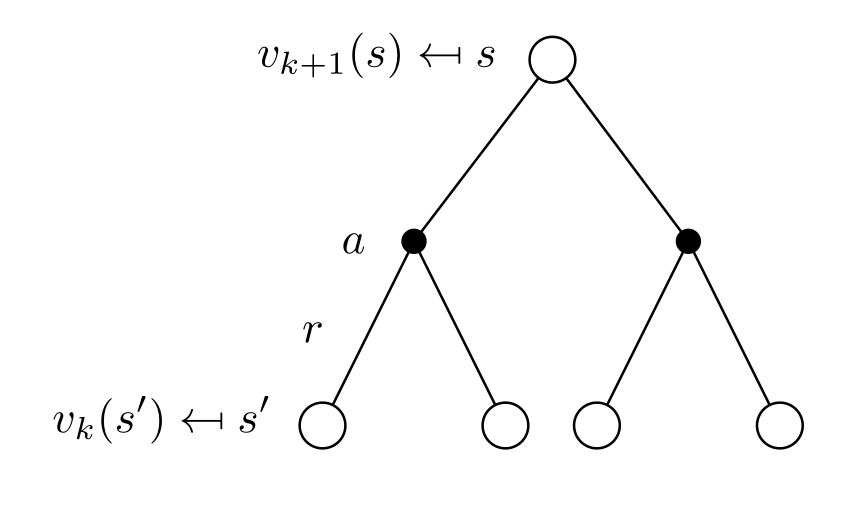
\[ \mathbf{V}_{k+1} = \mathbf{R}^\pi + \gamma \, \mathcal{P}^\pi \, \mathbf{V}_k \]
\[ V_{k+1} (s) \leftarrow \sum_{a \in \mathcal{A}(s)} \pi(s, a) \, \sum_{s' \in \mathcal{S}} p(s' | s, a) \, [ r(s, a, s') + \gamma \, V_k (s') ] \quad \forall s \in \mathcal{S} \]
We start with dummy (e.g. random) initial estimates \(V_0(s)\) for the value of every state \(s\).
\(V_\infty = V^{\pi}\) is a fixed point of this update rule because of the uniqueness of the solution to the Bellman equation.
Iterative policy evaluation
For a fixed policy \(\pi\), initialize \(V(s)=0 \; \forall s \in \mathcal{S}\).
while not converged:
for all states \(s\):
- \(V_\text{target}(s) = \sum_{a \in \mathcal{A}(s)} \pi(s, a) \, \sum_{s' \in \mathcal{S}} p(s' | s, a) \, [ r(s, a, s') + \gamma \, V (s') ]\)
\(\delta =0\)
for all states \(s\):
\(\delta = \max(\delta, |V(s) - V_\text{target}(s)|)\)
\(V(s) = V_\text{target}(s)\)
if \(\delta < \delta_\text{threshold}\):
- converged = True
Policy improvement
- For each state \(s\), we would like to know if we should choose an action \(a \neq \pi(s)\) or not in order to improve the policy.
- The value of an action \(a\) in the state \(s\) for the policy \(\pi\) is given by:
\[ Q^{\pi} (s, a) = \sum_{s' \in \mathcal{S}} p(s' | s, a) \, [r(s, a, s') + \gamma \, V^{\pi}(s') ] \]
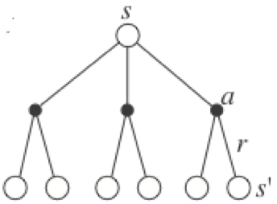
- If the Q-value of an action \(a\) is higher than the one currently selected by the deterministic policy:
\[Q^{\pi} (s, a) > Q^{\pi} (s, \pi(s)) = V^{\pi}(s)\]
then it is better to select \(a\) once in \(s\) and thereafter follow \(\pi\).
- If there is no better action, we keep the previous policy for this state.
Policy improvement
- This corresponds to a greedy action selection over the Q-values, defining a deterministic policy \(\pi(s)\):
\[\pi(s) \leftarrow \text{argmax}_a \, Q^{\pi} (s, a) = \text{argmax}_a \, \sum_{s' \in \mathcal{S}} p(s' | s, a) \, [r(s, a, s') + \gamma \, V^{\pi}(s') ]\]
- After the policy improvement, the Q-value of each deterministic action \(\pi(s)\) has increased or stayed the same.
\[\text{argmax}_a \; Q^{\pi} (s, a) \geq Q^\pi(s, \pi(s))\]
This defines an improved policy \(\pi'\), where all states and actions have a higher value than previously.
Greedy action selection over the state value function implements policy improvement:
\[\pi' \leftarrow \text{Greedy}(V^\pi)\]
Policy iteration
- Once a policy \(\pi\) has been improved using \(V^{\pi}\) to yield a better policy \(\pi'\), we can then compute \(V^{\pi'}\) and improve it again to yield an even better policy \(\pi''\).
- The algorithm policy iteration successively uses policy evaluation and policy improvement to find the optimal policy.
\[ \pi_0 \xrightarrow[]{E} V^{\pi_0} \xrightarrow[]{I} \pi_1 \xrightarrow[]{E} V^{\pi^1} \xrightarrow[]{I} ... \xrightarrow[]{I} \pi^* \xrightarrow[]{E} V^{*} \]
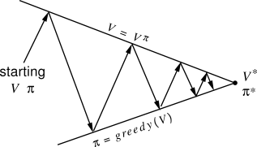
The optimal policy being deterministic, policy improvement can be greedy over the state-action values.
If the policy does not change after policy improvement, the optimal policy has been found.
Policy iteration
Initialize a deterministic policy \(\pi(s)\) and set \(V(s)=0 \; \forall s \in \mathcal{S}\).
while \(\pi\) is not optimal:
while not converged: # Policy evaluation
for all states \(s\):
- \(V_\text{target}(s) = \sum_{a \in \mathcal{A}(s)} \pi(s, a) \, \sum_{s' \in \mathcal{S}} p(s' | s, a) \, [ r(s, a, s') + \gamma \, V (s') ]\)
for all states \(s\):
- \(V(s) = V_\text{target}(s)\)
for each state \(s \in \mathcal{S}\): # Policy improvement
- \(\pi(s) \leftarrow \text{argmax}_a \sum_{s' \in \mathcal{S}} p(s' | s, a) \, [r(s, a, s') + \gamma \, V^{\pi}(s') ]\)
if \(\pi\) has not changed: break
Value iteration
One drawback of policy iteration is that it uses a full policy evaluation, which can be computationally exhaustive as the convergence of \(V_k\) is only at the limit and the number of states can be huge.
The idea of value iteration is to interleave policy evaluation and policy improvement, so that the policy is improved after EACH iteration of policy evaluation, not after complete convergence.
As policy improvement returns a deterministic greedy policy, updating of the value of a state is then simpler:
\[ V_{k+1}(s) = \max_a \sum_{s'} p(s' | s,a) [r(s, a, s') + \gamma \, V_k(s') ] \]
Note that this is equivalent to turning the Bellman optimality equation into an update rule.
Value iteration converges to \(V^*\), faster than policy iteration, and should be stopped when the values do not change much anymore.
Value iteration
Initialize a deterministic policy \(\pi(s)\) and set \(V(s)=0 \; \forall s \in \mathcal{S}\).
while not converged:
for all states \(s\):
- \(V_\text{target}(s) = \max_a \, \sum_{s' \in \mathcal{S}} p(s' | s, a) \, [ r(s, a, s') + \gamma \, V (s') ]\)
\(\delta = 0\)
for all states \(s\):
\(\delta = \max(\delta, |V(s) - V_\text{target}(s)|)\)
\(V(s) = V_\text{target}(s)\)
if \(\delta < \delta_\text{threshold}\):
- converged = True
Dynamic Programming
Policy-iteration and value-iteration consist of alternations between policy evaluation and policy improvement.
This principle is called Generalized Policy Iteration (GPI).
Solving the Bellman equations requires the following:
accurate knowledge of environment dynamics \(p(s' | s, a)\) and \(r(s, a, s')\) for all transitions (model-based);
enough memory and time to do the computations;
the Markov property.
Finding an optimal policy is polynomial in the number of states and actions: \(\mathcal{O}(N^2 \, M)\) (\(N\) is the number of states, \(M\) the number of actions).
The number of states is often astronomical (e.g., Go has about \(10^{170}\) states), often growing exponentially with the number of state variables (what Bellman called “the curse of dimensionality”).
In practice, classical DP can only be applied to problems with a few millions of states.
Curse of dimensionality
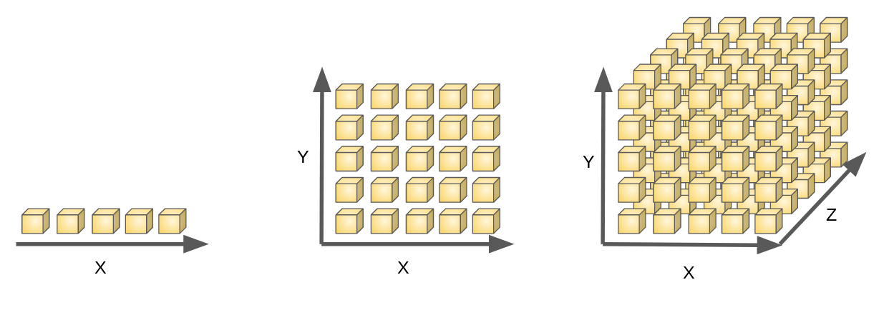
If one variable can be represented by 5 discrete values:
2 variables necessitate 25 states,
3 variables need 125 states, and so on…
The number of states explodes exponentially with the number of dimensions of the problem.